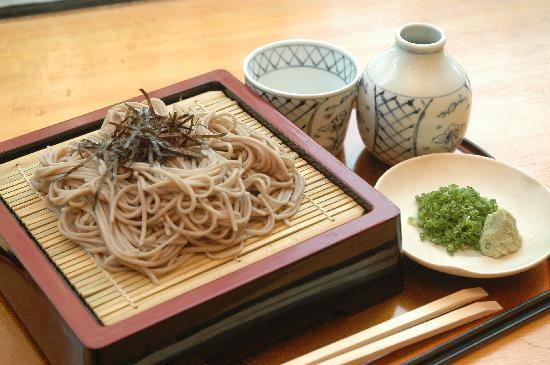
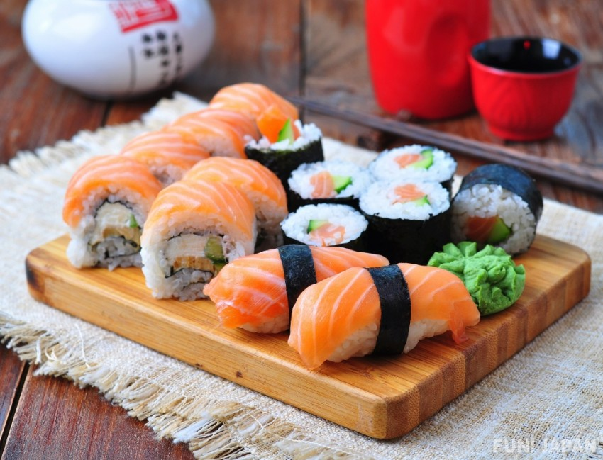
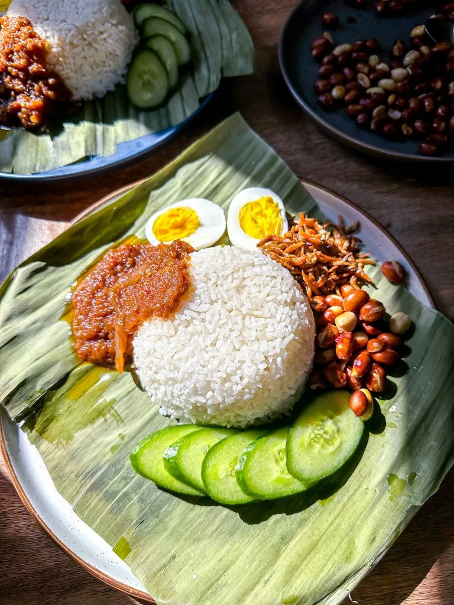
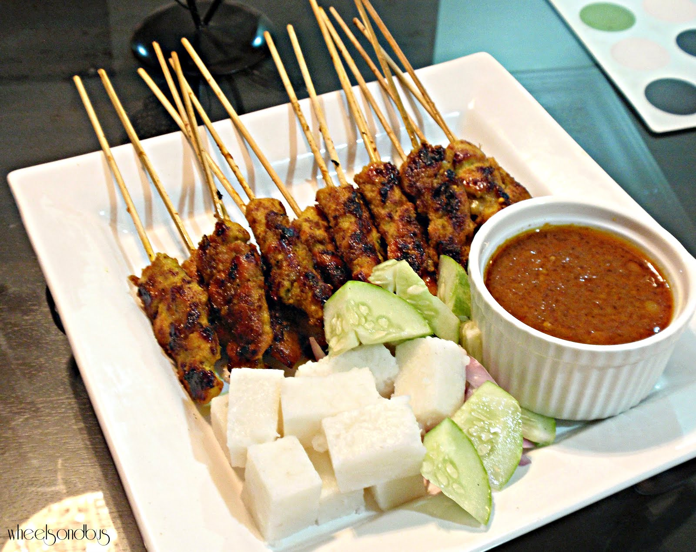

🗼 好きな食べ物
日本で私の心もお腹もわしづかみにした“推しグルメ”たち。
おいしいハラール料理、ワクワクするスポット、新しい趣味、そして忘れられない瞬間まで─日本での冒険に一緒に飛び込んでみませんか。
|

🍜 Soba寒い日には、冷たくてさっぱりしたざるそばを味わうのも最高です。中でも、コシのあるそばを濃いめのつゆでいただくのが私のお気に入りです Must Try |
 🍣 Sushi地元の魚市場で味わった新鮮なお寿司は、一生忘れられない体験です。特に、とろっと甘いサーモン寿司は私の“永遠の推し”なんです。あのクオリティとおいしさは、ほかではなかなか出会えません。 Traditional |
|

🥞 NasiLemakマレーシアで食べたナシレマッは、まさに“幸せの一皿”。特に、ココナッツミルク香るふわふわご飯とピリ辛サンバルの組み合わせは、私の心を一瞬でつかんじゃいました。 Comfort Food |
 🥞 Sateマレーシアで食べたサテは、まさに“香ばしさの暴れん坊”。炭火で焼けたお肉に甘辛いピーナッツソースをつけた瞬間、もう完全にノックアウト。しかも、ふわっとしたナシインピットと一緒に食べるのは絶対外せないんです。あれがあるとおいしさが倍増しちゃう。 Comfort Food |